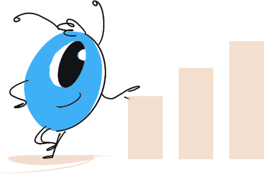
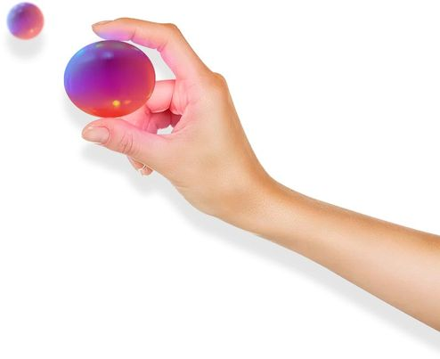
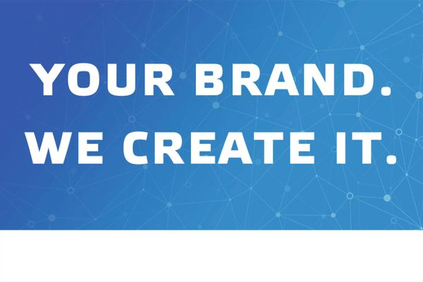
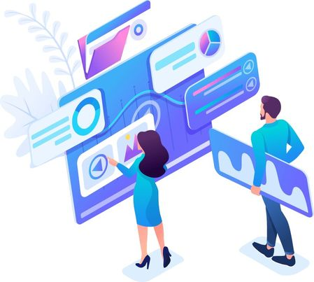
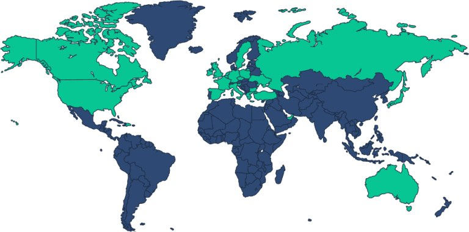

SEOMAX е резултатно-ориентирана дигитална агенция с екип от опитни и
мотивирани специалисти. През последните 10 години, нашият екип
работи активно с брандове от различни сфери, за да помогнем да
реализират своите цели в Интернет пространството. Може да направим
това и за Вашия бизнес: * Открийте и ангажирайте правилната
аудитория Изградете силно онлайн присъствие

Xplora е маркетинг и дигитална агенция, фокусирана в осигуряването
на впечатляваща възвращаемост на инвестицията от дигиталния
маркетинг за своите клиенти в България и по света.
Изградихме репутацията, че правим клиентите си успешни в постигането
на бизнес и маркетинг целите им. Изпълняваме и наша отговорност е да
създаваме и споделяме добри практики, които развиват сферата на
дигиталния маркетинг в България.

Ще Ви покажем как поддръжката на социални мрежи може успешно да
работи за Вас. Усвоявайки силата на маркетинговите фундаменти в
социалните мрежи екипът на Marketise Me ще Ви помогне да увеличите
Вашите онлайн позиции, Вашата публика , потребителите на Вашите
продукти или услуги многократно. Ние предлагаме професионални услуги
свързани с маркетинг в социалните мрежи, поддръжка на Facebook
страница, Instagram профил и реклама в Google Ads.

Онлайн маркетингът се простира далеч отвъд изготвянето на банер
реклама. Ние помагаме на бизнеса да преоткрие дигиталните канали.
Наши клиенти са както стартъп компании, така и добре познати
български и международни брандове. Разнообразието от проекти ни
позволява да имаме професионален подход към вашия бизнес и
предизвикателствата пред него.
Metrix е агенция за дигитален маркетинг, специализирана в маркетинг
на ефективността и постигане на възможно най -висока възвръщаемост
на инвестициите за нашите партньори. Ние можем да ви помогнем
успешно да продадете вашия продукт онлайн, като обхванете всички
съответни канали за изпълнение.

Какво правим * Управление на платена реклама в съответствие с вашите
бизнес цели Персонализирани индивидуални рекламни фунии за всеки
клиент, защото всеки магазин има своя специфичност Работа за
устойчив растеж и постоянни резултати, за да има по-малко
несигурност в бизнеса ви Управление на среден или висок рекламен
бюджет. Не е необичайно за нас да управляваме акаунти с $1000, $5000
или повече дневни рекламни разходи. Тясно сътрудничество с клиента,
така че нашите усилия да са координирани Фокус върху преките
действия за максимална възвръщаемост на разходите за реклама (ROAS)